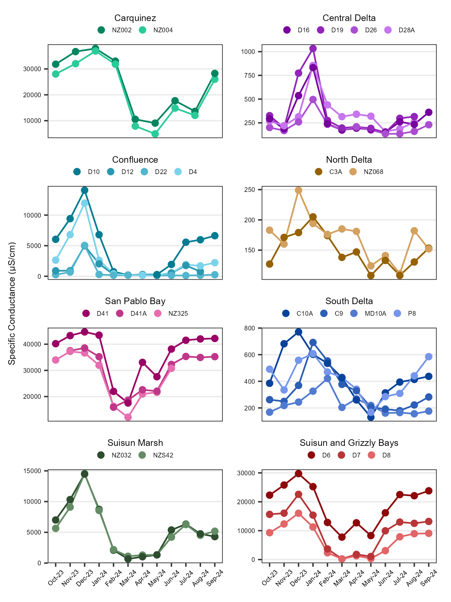
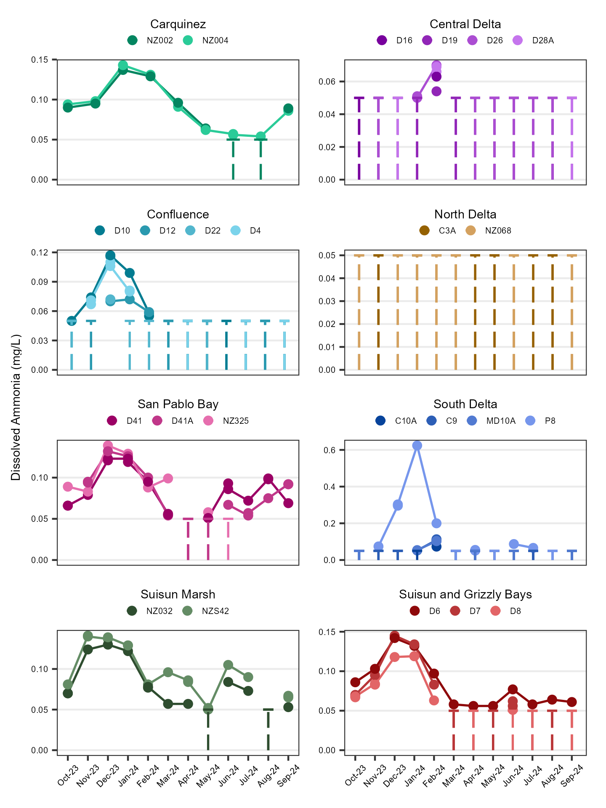
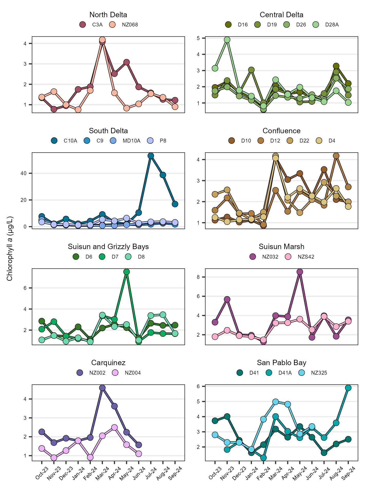
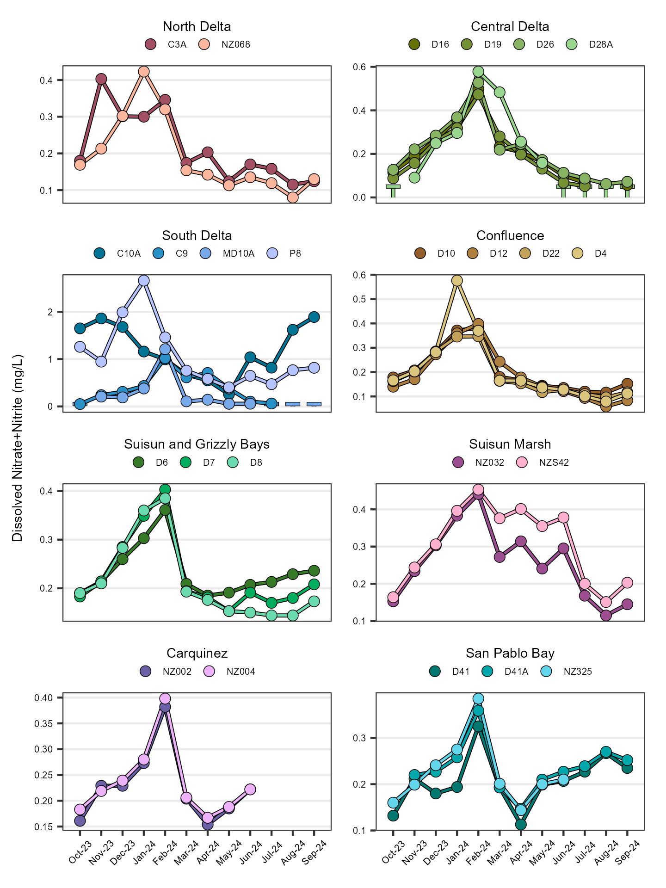
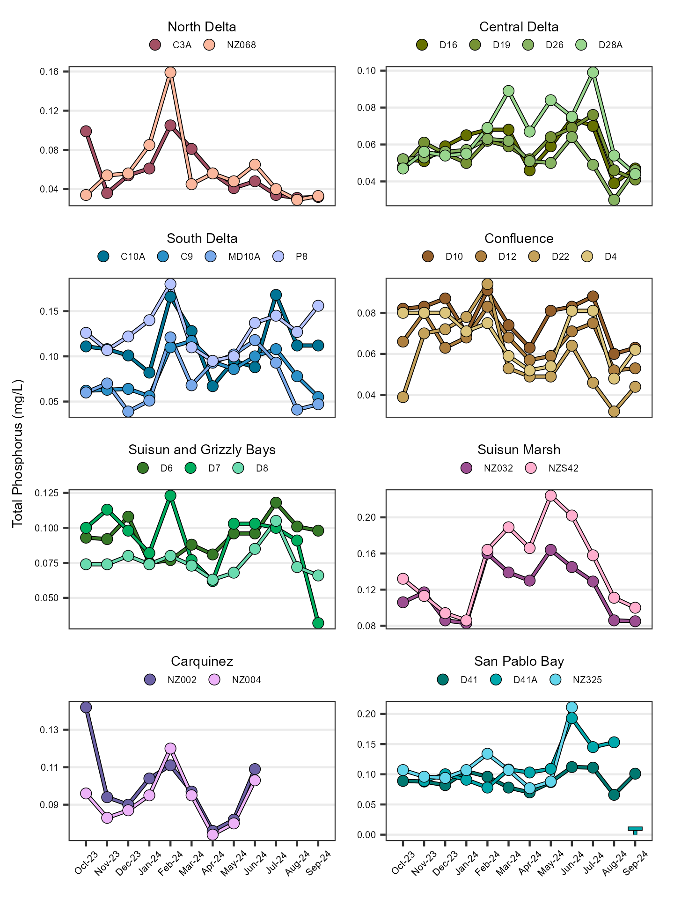

Discrete Water Quality Report
Introduction
The Department of Water Resources (DWR) and the US Bureau of Reclamation (USBR) are required by Water Right Decision 1641 (D-1641) to collect discrete water chemistry data to monitor the water quality at select sites in the upper San Francisco Estuary (Estuary). This report describes the results of these monitoring efforts for water year 2024 (October 1st 2023 through September 30th 2024) which was classified as a above normal year in the Sacramento and San Joaquin Valleys (source). Results are compared to the previous water year, which was classified as wet in both valleys.
Methods
Discrete water quality samples were collected monthly at 24 monitoring sites throughout the Upper Estuary and were grouped into regions based on their geographic location (Figure 1; Table 1). These sites represent a variety of aquatic habitats, from narrow, freshwater channels to broad, estuarine bays.
| Region | WY Index | Stations |
|---|---|---|
| Carquinez | Sacramento | NZ002, NZ004 |
| Central Delta | San Joaquin | D16, D19, D26, D28A |
| Confluence | Sacramento | D4, D10, D12, D22 |
| North Delta | Sacramento | C3A, NZ068 |
| San Pablo Bay | Sacramento | D41, D41A, NZ325 |
| South Delta | San Joaquin | C9, C10A, MD10A, P8 |
| Suisun and Grizzly Bays | Sacramento | D6, D7, D8 |
| Suisun Marsh | Sacramento | NZ032, NZS42 |
EMP collects data for six different field parameters and 18 different laboratory constituents. The analytes highlighted in this report are:
- Specific Conductance (μS/cm)
- Turbidity (FNU)
- Dissolved Ammonia (mg/L)
- Chlorophyll a (μg/cm)
- Dissolved Nitrate+Nitrite (mg/L)
- Total Phosphorus (mg/L)
Regional facet graphs were created for each parameter. The average, minimum and maximum values were determined for each analyte. Non-detect values were represented graphically via a vertical dashed line capped at the reporting limit. Average summary statistics are reported as the median (M) ± the median average deviation.
For more in-depth methodology, see here.
Results
Specific Conductance
The average specific conductance value was 674 ± 527 µS/cm; for comparison, the previous year average was 538 ± 417 µS/cm. Values ranged from 108 µS/cm to 44700 µS/cm. Per region average, minimum, and maximum values are shown in Table 2; time series plots are shown in Figure 2.
| Statistic | Carquinez | Central Delta | Confluence | North Delta | San Pablo Bay | South Delta | Suisun and Grizzly Bays | Suisun Marsh |
|---|---|---|---|---|---|---|---|---|
| Average | 27000 | 234 | 684 | 157 | 34500 | 328 | 12400 | 4970 |
| Min | 4920 | 134 | 118 | 108 | 12100 | 130 | 222 | 674 |
| Max | 37900 | 1030 | 14100 | 249 | 44700 | 771 | 29800 | 14500 |

Turbidity
The average turbidity value was 9.15 ± 4.85 FNU; for comparison, the previous year average was 11.10 ± 6.00 FNU. Values ranged from 0.40 FNU to 72.20 FNU. Per region average, minimum, and maximum values are shown in Table 3; time series plots are shown in Figure 3.
| Statistic | Carquinez | Central Delta | Confluence | North Delta | San Pablo Bay | South Delta | Suisun and Grizzly Bays | Suisun Marsh |
|---|---|---|---|---|---|---|---|---|
| Average | 12.60 | 3.95 | 10.70 | 5.12 | 12.40 | 5.00 | 13.40 | 31.40 |
| Min | 5.10 | 0.40 | 4.60 | 1.40 | 3.00 | 0.70 | 6.40 | 15.40 |
| Max | 27.90 | 14.90 | 41.00 | 72.20 | 57.20 | 16.80 | 38.90 | 62.10 |

Dissolved Ammonia
The average dissolved ammonia value was 0.05 ± 0.00 mg/L; for comparison, the previous year average was 0.05 ± 0.00 mg/L. Values ranged from < 0.05 mg/L to 0.62 mg/L. 58.29% of samples were below the reporting limit. Per region average, minimum, and maximum values are shown in Table 4; time series plots are shown in Figure 4.
| Statistic | Carquinez | Central Delta | Confluence | North Delta | San Pablo Bay | South Delta | Suisun and Grizzly Bays | Suisun Marsh |
|---|---|---|---|---|---|---|---|---|
| Average | 0.09 | 0.05* | 0.05* | 0.05* | 0.086 | 0.05* | 0.058 | 0.081 |
| Min | 0.05* | 0.05* | 0.05* | 0.05* | 0.05* | 0.05* | 0.05* | 0.05* |
| Max | 0.143 | 0.07 | 0.117 | 0.05* | 0.139 | 0.624 | 0.145 | 0.141 |
| * value is RL |

Chlorophyll a
The average chlorophyll a value was 1.98 ± 0.70 µg/L; for comparison, the previous year average was 2.20 ± 0.96 µg/L. Values ranged from 0.59 µg/L to 53.10 µg/L. Per region average, minimum, and maximum values are shown in Table 5; time series plots are shown in Figure 5.
| Statistic | Carquinez | Central Delta | Confluence | North Delta | San Pablo Bay | South Delta | Suisun and Grizzly Bays | Suisun Marsh |
|---|---|---|---|---|---|---|---|---|
| Average | 1.79 | 1.57 | 2.08 | 1.37 | 2.64 | 2.18 | 1.78 | 3.22 |
| Min | 0.89 | 0.59 | 0.86 | 0.72 | 1.05 | 0.67 | 0.90 | 1.28 |
| Max | 4.59 | 4.90 | 4.18 | 4.18 | 5.90 | 53.10 | 7.53 | 8.54 |

Dissolved Nitrate + Nitrite
The average dissolved nitrate+nitrite value was 0.20 ± 0.08 mg/L; for comparison, the previous year average was 0.22 ± 0.11 mg/L. Values ranged from < 0.05 mg/L to 2.66 mg/L. 4.97% of samples were below the reporting limit. Per region average, minimum, and maximum values are shown in Table 6; time series plots are shown in Figure 6.
| Statistic | Carquinez | Central Delta | Confluence | North Delta | San Pablo Bay | South Delta | Suisun and Grizzly Bays | Suisun Marsh |
|---|---|---|---|---|---|---|---|---|
| Average | 0.22 | 0.1615 | 0.16 | 0.17 | 0.21 | 0.5995 | 0.19 | 0.29 |
| Min | 0.15 | 0.05* | 0.06 | 0.08 | 0.11 | 0.05* | 0.14 | 0.11 |
| Max | 0.40 | 0.578 | 0.58 | 0.42 | 0.38 | 2.66 | 0.40 | 0.45 |
| * value is RL |

Total Phosphorus
The average total phosphorus value was 0.08 ± 0.02 mg/L; for comparison, the previous year average was 0.09 ± 0.02 mg/L. Values ranged from < 0.01 mg/L to 0.22 mg/L. 0.28% of samples were below the reporting limit. Per region average, minimum, and maximum values are shown in Table 7; time series plots are shown in Figure 7.
| Statistic | Carquinez | Central Delta | Confluence | North Delta | San Pablo Bay | South Delta | Suisun and Grizzly Bays | Suisun Marsh |
|---|---|---|---|---|---|---|---|---|
| Average | 0.10 | 0.06 | 0.07 | 0.05 | 0.1 | 0.11 | 0.08 | 0.12 |
| Min | 0.07 | 0.03 | 0.03 | 0.03 | 0.01* | 0.04 | 0.03 | 0.08 |
| Max | 0.14 | 0.10 | 0.09 | 0.16 | 0.211 | 0.18 | 0.12 | 0.22 |
| * value is RL |

Interpretations
Archived Reports
Previous EMP discrete water quality reports can be found here.